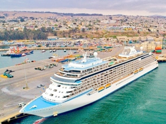

3.49 Mn
3.49 Mn 1.39 m h1/3
1.39 m h1/3
CIFRAS DESTACADAS
- 19.934.166
- TONELADAS MOVILIZADAS
TOTALES
- +75.000
- PASAJEROS RECIBIDOS
- $8.157.000
- DE PESOS EN PROYECTOS
MEDIOAMBIENTALES
SOSTENIBILIDAD
Comprometidos con nuestros vecinos, el medio ambiente y el desarrollo
sustentable de nuestra comuna
- Estudio de avifauna en las lagunas de Llolleo y la desembocadura del río Maipo
- Paseo Bellamar, principal atractivo turístico del borde costero
- Organización y apoyo en actividades culturales de relevancia en nuestra comuna
Visita también nuestras iniciativas digitales
DESTACAMOS
- 18 DE ENERO
- Puerto San Antonio destaca avances del proyecto Puerto Exterior en su reporte anual de sostenibilidad
- Además, durante 2017, los concesionarios del puerto movilizaron casi 1.296.890 contenedores
- CONTINUAR LEYENDO >
- PRENSA
- VER MÁS NOTICIAS >
- 11 DE ENERO
- Puerto de San Antonio alcanza nuevo máximo histórico al transferir más de 22 millones de toneladas
- 05 DE ENERO
- Puerto de San Antonio continúa con su programa de visitas guiadas a la bahía
- REDES SOCIALES
- 
 puertosanantonio
puertosanantonio- En Puerto San Antonio (17/02/19), el Crucero Seven Seas Explorer. de 224 metros eslora y bandera de Islas Marshall, se encuentra desde ayer en el concesionario Puerto Central, con zarpe programado para hoy a las 18 Hrs.
#San Antonio #ElPuertodeChile Fotos: @Ruben JeriaH
#cruceros #verano #Chile #cruiseship #port #cruises - Síguenos también en:
 @puertosanantonio
@puertosanantonio
TRANSPARENCIA
- LICITACIONES EN CURSO
- VER TODAS >
- LICITACIÓN PÚBLICA
- SAI 01/2019
- Resumen especificaciones técnicas para el desarrollo de tareas de mantención preventiva sistema VCMOC
- > ALCANCE
- > PUBLICACIÓN
- LICITACIÓN PÚBLICA
- SAI 01/2019
- Diseño, implementación y mantención sitio web corporativo Empresa Portuaria San Antonio
- > ALCANCE
- > PUBLICACIÓN
- LICITACIÓN PÚBLICA
- SAI 01/2019
- Contratación de servicios de mantención preventiva y arriendo de equipos para CCTV de la Empresa Portuaria San Antonio
- > ALCANCE
- > PUBLICACIÓN